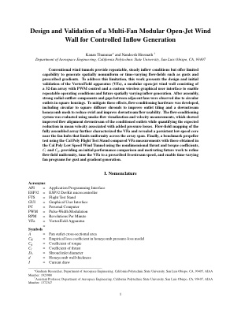
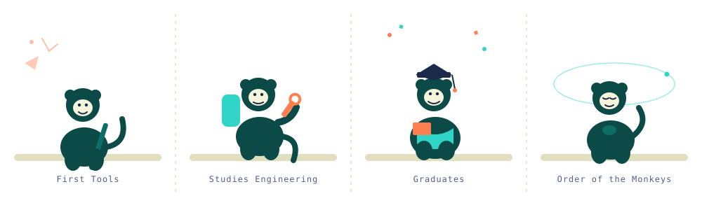

Experimental Aerodynamics
Wind tunnels, diffuser flow, flow straighteners, smoke visualization, and pressure loss studies.
San Luis Obispo, California
We design accessible experimental platforms that let students study fluid mechanics, propulsion, heat transfer, and compressible flow through real hardware, real data, and careful measurement — not just simulation.

VortexField — a 32-fan modular open-jet wind wall for controlled inflow generation, with PWM control and wireless GUI operation.
Order of the Monkeys
Our mascot traces the same arc every member of the lab walks: curiosity, training, credentialed skill, and calm, focused research.

Research Highlights
Every project in the archive falls under one of these themes, each built around low-cost, high-fidelity hardware that students design, build, and instrument themselves.
Wind tunnels, diffuser flow, flow straighteners, smoke visualization, and pressure loss studies.
Low Reynolds number propeller measurements, BEMT validation, thrust, torque, power, and efficiency.
Radiation and convection experiments connecting surface properties to measurable heat transfer.
Recent Work
Research Output
Downloadable project reports documenting methodology, apparatus design, and results.